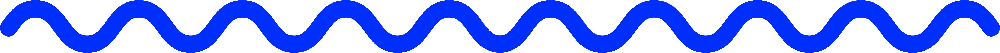

Can we count on you?
Visual communication and design futuring for a good cause
Since 1999, non-profit organisation Médecins Sans Frontières (MSF) has led the Access Campaign to promote vaccine access and awareness. This solo project employed design futuring and graphic narratives to develop a timescape and a social media call-to-action initiative.

Project Journey
Quick overview from start to finish
Craft an unsolicited call-to-action campaign for not-for-profit Médecins Sans Frontières (MSF) based on the challenge of global access to Covid-19 vaccines using a timescape and four Instagram tiles. MSF needs young people to sign up to and support MSF's Access Campaign.
This project involved desktop research on visual communication fields, including Gestalt theory and typography, and an in-depth study of MSF's brand, and social media marketing strategies.
Overview
- Studied the social media and volunteering habits of the target group (18-35 year olds).
- Investigated MSF's prior Access Campaign strategies and their impact (such as changing laws).
- Researched current social media trends, particularly regarding Instagram.
Ideation
While most of my research was contained in word documents, I did create a basic mood board to summarise findings regarding the target audience. I also used the Crazy Eights design sprint method to inspire a few ideas for the Instagram post while the research was fresh in my memory.
Prior to designing the Instagram tiles, I created a timescape using Adobe Illustrator to visualise a potential future for MSF. Futures are unpredictable, yet we constantly try to strategise for them. This design methodology is backed by research and helps strategise by visually laying out a roadmap of potential outcomes.
I found this design methodology particularly compelling, because, as designers, it is imperative to consider consequences. Timescapes are not a crystal ball for the future, but a strategic tool to understand the purpose of a design and striving for the best possible outcome.
My timescape made it into my professor's academic paper on design futuring. View Clare Cooper's paper here.
The timescape made me reflect more deeply about the kind of Instagram campaign I would want to create based on the timescape's potential futures.
Below are the final Instagram tiles, which are based on several strategic design choices. Similar to the timescape, they are hand-drawn in Adobe Illustrator.
Design Choices
- Employed the communicative tool of digital messaging to connect to the target audience (18-35 year olds).
- Research supported that texting and emojis can boost moods and improve relationships.
- Usage of cartoon aesthetic ignites the fun appeal based on study of six primary engagement appeals.
- Colour palette blends MSF colour scheme with Very Peri, Pantone's 2022 colour of the year, to appeal to Gen Z's interest in trends.
- Social media campaigns utilising human faces are more successful in audience engagement according to research.
- Combined MSF photographs with 'doodle-bomb' illustrations inspired by artist Hattie Stewart.
- There is a clear storyline tying the four tiles together, which is also illustrated by a dotted squiggly line.
Instagram Caption
And, finally, an eye-catching Instagram visual needs an equally engaging caption to go with it. I used a light-hearted, playful tone, and emojis to grab the viewer's attention along with facts to underline the serious and important nature of the post.